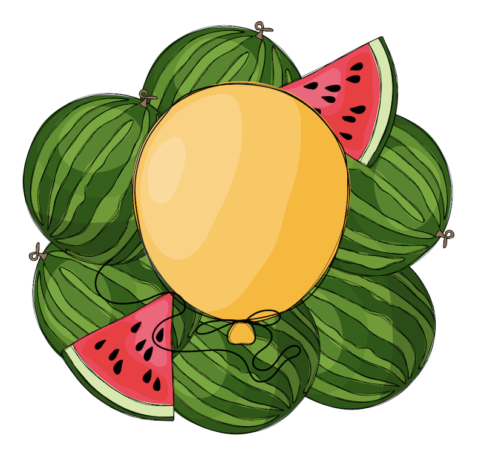

Yalda is an ancient Persian celebration that marks the longest night of the year, corresponding to the winter solstice. The word Yalda originates from the Syriac language and means birth, signifying the rebirth of the sun as days gradually grow longer after the solstice.

On Yalda night, Iranian families come together to spend the night sharing stories, reading poetry (especially works of Persian poets like Hafez), and enjoying each other's company. The celebration is accompanied by traditional items, including:
Mahya, busy organizing the ICPC regional contest, has missed celebrating Yalda night with her family. However, she doesn't want to miss out entirely and plans to celebrate with her friends at the university. To make the gathering more festive, Mahya wants to buy exactly one traditional item for the celebration. Due to her limited budget, she needs to carefully decide which item to buy.
The items should be selected based on their price and her preferences. Watermelon is the first choice, pomegranates are the second choice, and nuts are the third choice. If Mahya's budget does not allow her to buy any of the items, she will skip the purchase entirely.
The input consists of the following:
Print the name of the first item Mahya can affrd from her preference list: Watermelon, Pomegranates, or Nuts. If her budget is not sufficient for any of the items, output Nothing.